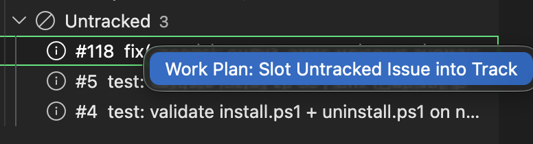
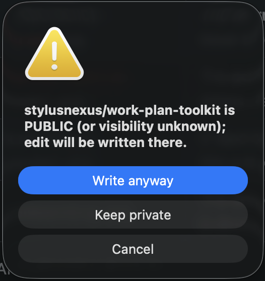
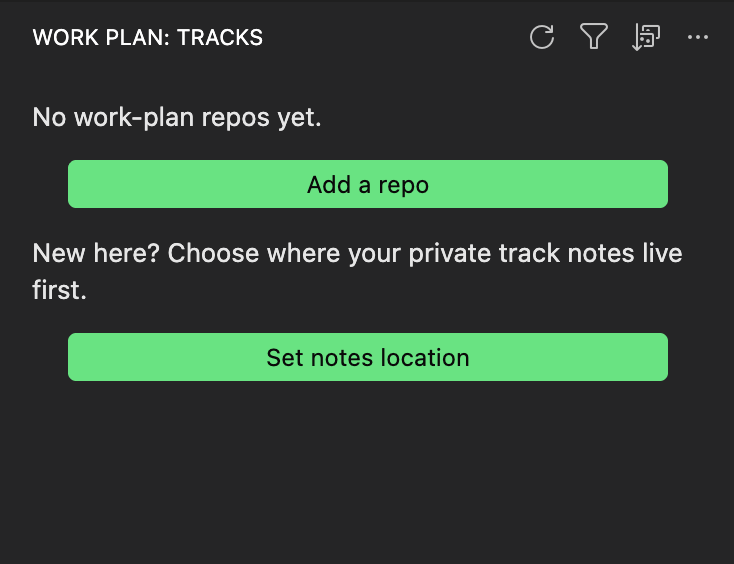
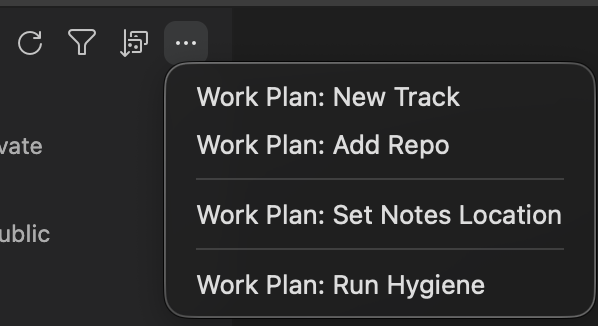

Work Plan Viewer: the VS Code extension for work-plan
Work Plan Viewer (stylusnexus.work-plan-viewer, listed as "Work Plan") is the free, MIT-licensed VS Code extension for the work-plan toolkit: it shows your tracks as a sidebar tree and a Mermaid dependency graph, and lets you edit them without leaving the editor.
It contains no planning logic of its own; every read goes through work-plan export --json and every write runs a work-plan CLI subcommand, so the extension and the CLI never disagree.
What Work Plan Viewer shows
Work Plan Viewer adds a Work Plan container with two views, Tracks and Plans, to the VS Code activity bar.
- Tracks tree. Repos and their tracks with a status dot, open and closed counts, blocked and next-up hints, a public-repo badge, and a visibility and tier badge that flags a plan committed to a public repo's shared tier.
- Dependency graph and detail panel. A Mermaid graph of next-up, depends-on, owns and blocks edges, including GitHub-native blocked-by links, with zoom, pan, fit-to-width and export as SVG or PNG. The detail panel lists issues by milestone with a progress bar, blockers, depends-on chips and next-up order.
- Untracked bucket. Open issues that no track references, with a right-click action to slot one into a track and optional auto-slot suggestions, including an offline heuristic.
- Lenses and sorting. Filter by milestone, status, blocked or stale tracks, and sort by blocked first, most open, name or least recently touched.
- Search Issues. Title search with
%wildcards, and label search with alabel:prefix such aslabel:security. - Plans view. Plan and spec documents with their
plan-statusverdicts, so stalled and unverified plans stand out across repos.


What Work Plan Viewer can change
Every action in Work Plan Viewer runs a work-plan CLI command, and writes into a public repository first show a confirm dialog.
- Edit track fields, set next-up by hand or by auto-suggest, add, move or reference issues, refresh a track from GitHub, preview label drift and apply
reconcile, run hygiene, create, rename, close, archive or delete tracks, and publish a private track to the shared tier. - Run the daily commands from the title bar or a track's menu: Daily Brief, Where Was I? (re-orient) and Wrap Up Session (handoff), with output in the Work Plan output channel.
- Close an issue on GitHub, behind a mandatory "cannot be undone" confirmation, or toggle the
work-plan:in-progresslabel. These are the extension's only two GitHub writes. - Run Work Plan: Run Diagnostics to check Python,
git,ghsign-in,yq, config andnotes_root, with a fix for each problem.



Install Work Plan Viewer
Install the extension from either registry, then install the work-plan CLI that it drives.
- Install the extension from the VS Code Marketplace or Open VSX (for VSCodium, Cursor and Windsurf), or run
code --install-extension stylusnexus.work-plan-viewer. - Install the CLI:
npm install -g @stylusnexus/work-plan, or any method on the install section of the overview. - If VS Code cannot find
work-planon itsPATH, which is common when it is opened from the Dock or Finder, setworkPlan.cliPathto an absolute launcher path and reload the window.
In WSL, Remote-SSH and dev containers the extension runs in the remote environment, so install the CLI, gh, python3 and yq there and sign in with gh auth login inside it.
Requirements
Work Plan Viewer needs VS Code 1.90.0 or later and the work-plan CLI on your PATH or at workPlan.cliPath.
The CLI in turn needs Python 3.9+, git, a signed-in gh and mikefarah yq 4.x. The extension checks the CLI version when it starts and says when an update is needed.
Settings
Work Plan Viewer has 9 settings, all under the workPlan. prefix; the gear button in the view title opens them.
| Setting | Default | What it does |
|---|---|---|
workPlan.cliPath | "work-plan" | Path to the work-plan CLI launcher. Set an absolute path if VS Code cannot find the CLI on its PATH, then reload the window. |
workPlan.trackStaleDays | 14 | Days without activity before an active, in-progress or blocked track counts as stale. Drives the Stale tracks lens; display only. |
workPlan.autoRefreshInterval | 0 (off) | Re-poll the CLI in the background every 30, 60, 300 or 900 seconds, useful when teammates push shared-track changes. |
workPlan.expandReposByDefault | false | Expand all repo groups on load. A single-repo workspace always expands. |
workPlan.autoFocusRepo | false | When the open folder is a configured repo, scope the Tracks view to that repo. |
workPlan.showNextUpPreset | true | Show the active next-up ranking preset in the track detail panel. |
workPlan.stallDays | "match" | How long a plan's declared files can go without a commit before the Plans view calls it stalled: match the CLI, or 14, 30, 45, 60 or 90 days. |
workPlan.plansAutoRefresh | true | Re-scan a repo's plans when its git refs change, without a manual refresh. |
workPlan.autoSlotConfidenceThreshold | 0.7 | Confidence cutoff (0 to 1) for an auto-slot suggestion to land in the one-click Suggested bucket. |
See the Work Plan Viewer README for every command and the release history, or the CLI command reference for the commands the extension runs.